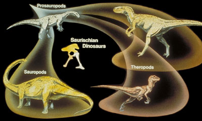
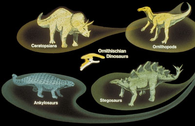

Général
Les cours que j´ai suivis sur COURSERA :
Object-Oriented Data Structures in C++
4 semaines. Certificat obtenu le
19/04/2021
. Identité vérifiée. écrire un programme en langage C++, y compris comment configurer un environnement de développement pour écrire et déboguer du code C++ et comment implémenter des structures de données en tant que classes C++.
Bayesian Statistics: From Concept to Data Analysis
4 semaines. Certificat obtenu le
16/02/2021
. Identité vérifiée. Approche bayésienne des statistiques, qui pour estimer des lois à paramètres, mixe l’influence de lois préalables sur ces paramètres avec les données à disposition. Pratiquée avec Excel.
Kinetics : Studying Spacecraft Motion
4 semaines. Certificat obtenu le
21/03/2019.
Identité vérifiée. Faire des prédictions sur le vecteur de rotation d'un engin non soumis à un torseur. Approcher le cas où un torseur est présent. établir les équations de rotation lorsque l'engin est doté d'instruments à échange de moment. Niveau second cycle universitaire. La validation implique la rédaction de devoirs.
Kinematics : Describing Spacecraft Motion
4 semaines. Certificat obtenu le
20/02/2019.
Identité vérifiée. Exposé des différents sets de coordonnées de description d’attitude d'un engin spatial. Variations des coordonnées en fonction du vecteur de rotation. Avantages et limites de chacun des sets. Passage entre les uns et les autres. Niveau second cycle universitaire. La validation implique la rédaction de devoirs.
Excel/VBA for Creative Problem Solving Part 2
4 semaines. Certificat obtenu le
29/04/2018
. Identité vérifiée. Compétences acquises : écrire des données d’un fichier Excel vers un fichier texte, importer des informations d’un fichier texte vers Excel ; automatiser l’extraction et la modification de données de plusieurs feuilles vers une seule feuille, ainsi que de plusieurs fichiers vers un seul fichier ; créer des formulaires d’interface utilisateur pour calculer et manipuler des données.
Excel/VBA for Creative Problem Solving, Part 1
5 semaines. Certificat obtenu le
23/03/2018
. Identité vérifiée. Compétences acquises : Créer des macros pour automatiser des procédures ; construire ses propres fonctions ; écrire des programmes qui interagissent avec l’utilisateur ; utiliser les outils de recherches de solutions numériques et les outils d’optimisations numériques.
« Dino 101 » : Dinosaur Paleobiology
40 heures. Certificat obtenu le
17/04/2018
. Identité vérifiée. Aperçu complet des dinosaures non aviaires. Sujets traités: anatomie, alimentation, locomotion, croissance, adaptations environnementales et comportementales, origines et extinction.

Illustr. from UC Museum of Paleontology
